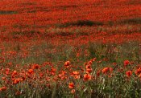

Where To Go
Among many places worth a visit within easy reach:
- Hunstanton Sealife Centre is one of three National Seal Sanctuaries responsible for the rescue, rehabilitation and release of wild animals including seal pups found washed up on the British coastline. It also houses otters and penguins, and lots of fish!
- The Oasis Leisure Centre offers indoor and outdoor swimming pools, indoor bowls (winter only), squash, gymnasium, tennis, table tennis and skateboarding.
- Norfolk Lavender, in the nearby village of Heacham, is a must for gardening fans and a pleasant way to while away a few hours with a guided tour, a trip to the gift shop, or a cup of tea in delightful surroundings. Admission is free.
- Historic King’s Lynn has a wide variety of shops and places of interest.
- Holkham Hall is a stately home with, directly opposite, one of Britain’s best beaches - 9 miles of unspoilt sand, part of an English Nature reserve. Ideal for birdwatching, a quiet stroll or just having a picnic.
- Burnham Market is a delightful market town with a wide selection of specialist shops.
- If you want to see seals in the wild, try a boat trip to Blakeney Point. You can practically stroke them, and you’d swear they were posing for photographs!
- Snettisham Farm Park has a good assortment of animals, ideal for keeping kids of all ages amused.
- Wells-next-the-Sea combines a charming harbour town with coastal views and a miniature railway.
- The Royal Estate of Sandringham is only a short drive away.
- Castle Rising Castle, situated between Hunstanton and King’s Lynn, is one of the most famous 12th Century castles in England. The stone keep, built in around 1140ad, is amongst the finest surviving examples of its kind anywhere in the country. It plays host to events ranging from Romeo and Juliet in the open air, to jousting and battle re-enactments.
- Birdwatchers are well catered for, with RSPB reserves at Snettisham and Titchwell.